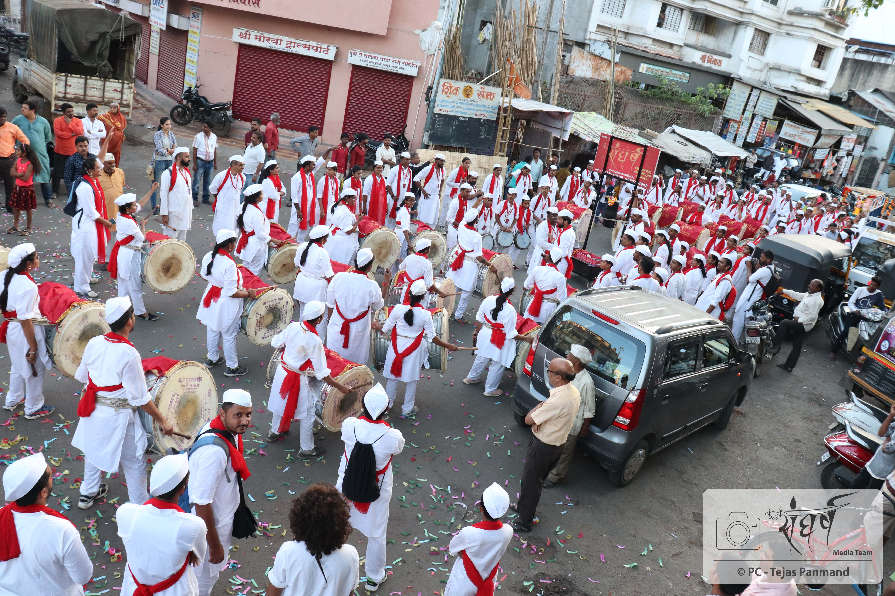
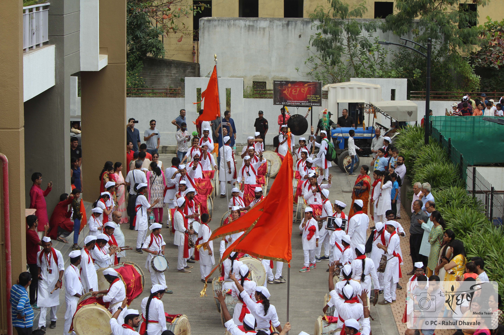
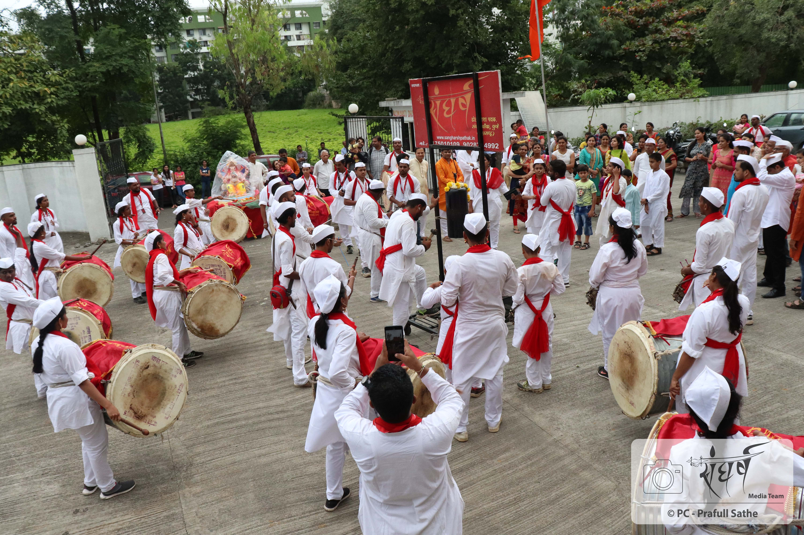
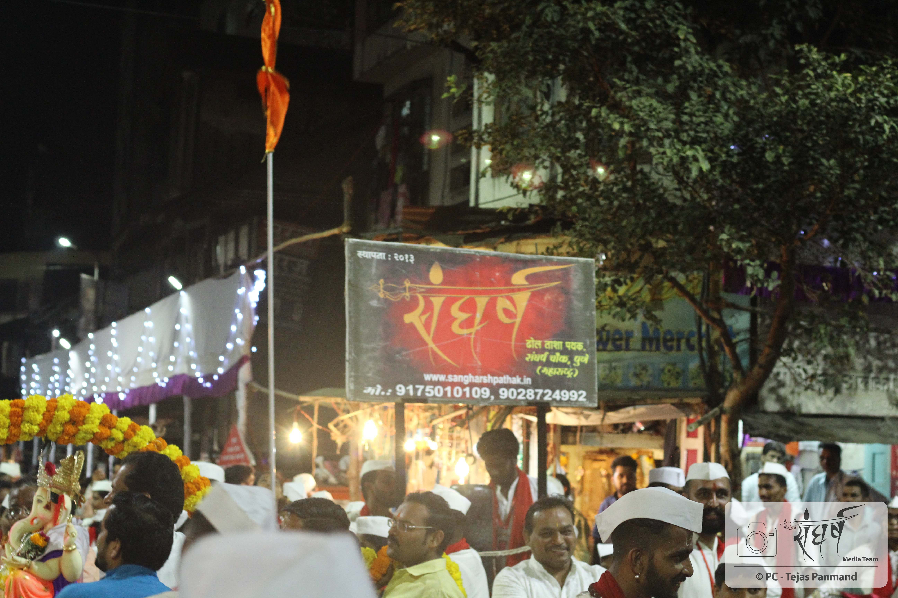
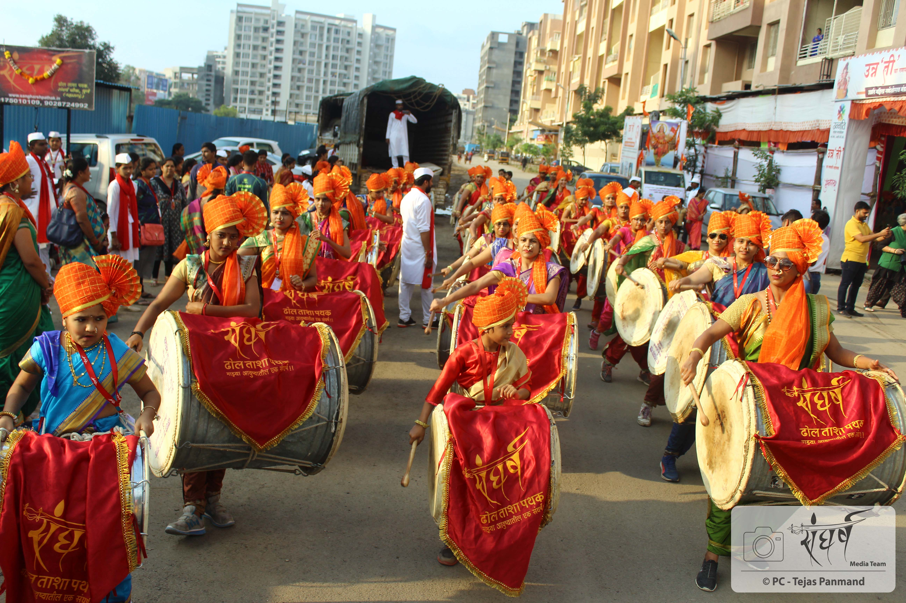
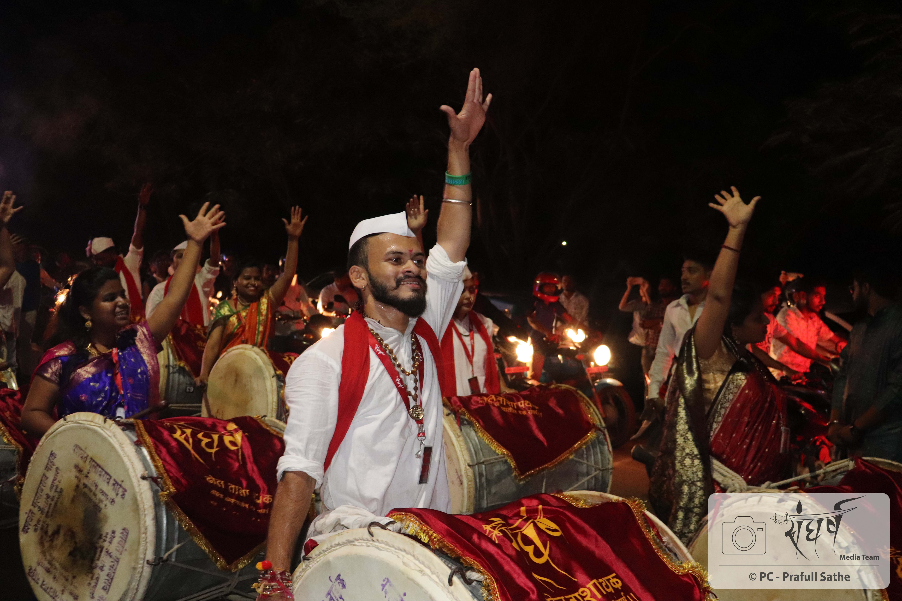
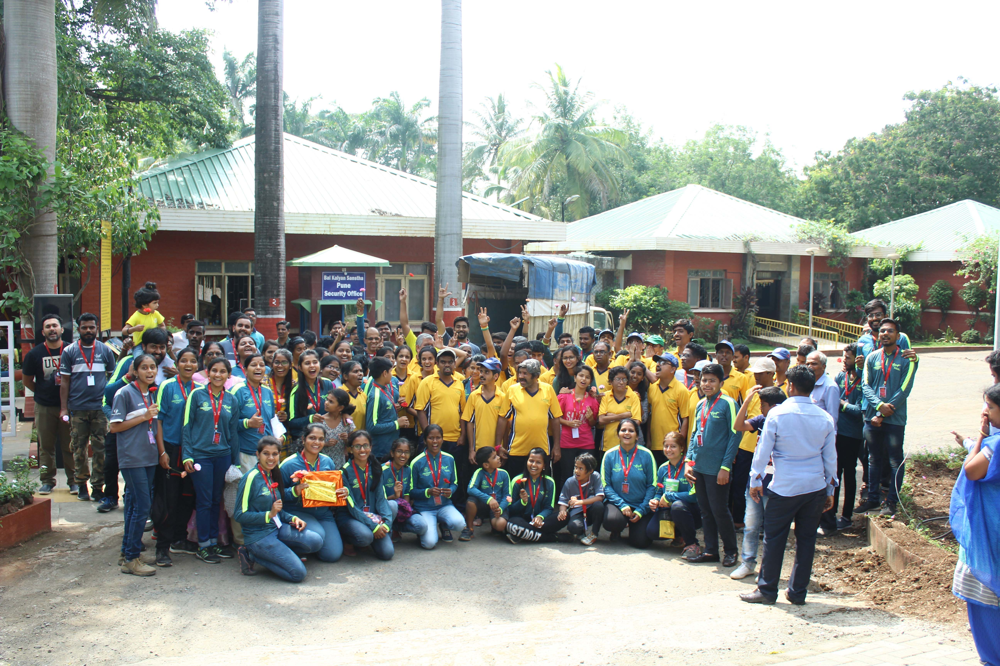
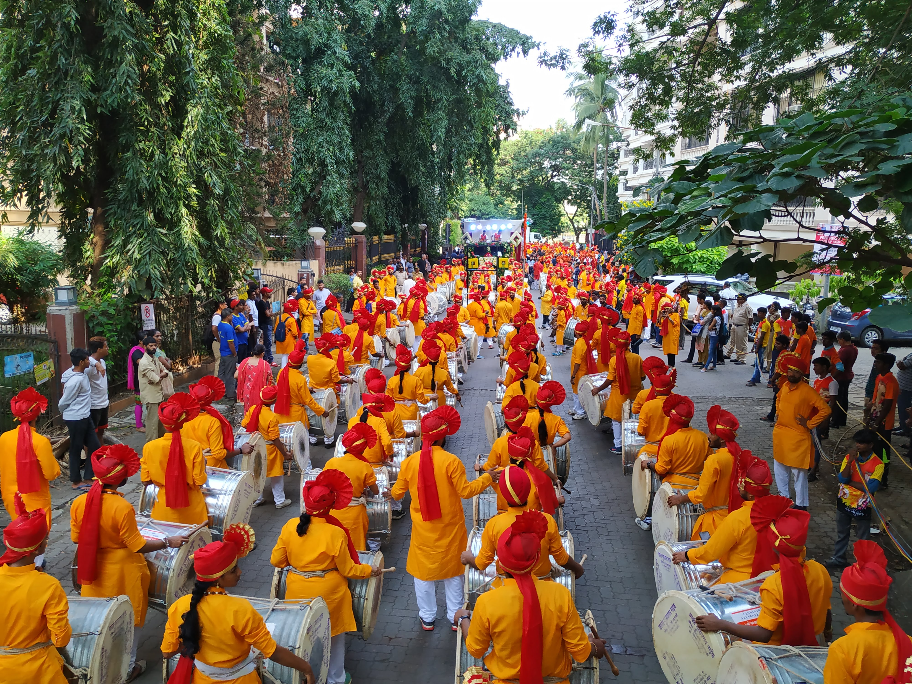

प्रवास २०१८
संघर्ष प्रवास २०१८ ...
जगात अशी एकही व्यक्ती नसेल जी ढोलाच्या ठोक्यावर थिरकत नाही. ढोलाचा एक ठोका आणि ताशाची तर्री ऐकल्यावर अंगावर येणारे ते शहारे आयुष्यात आणखी एक स्वप्नाची भर घालतात. आणि या स्वप्नासाठी जे संघर्ष करतात ते खरे वादक ठरतात. अशाच वादकांच्या स्वप्नासाठी उभा राहिला संघर्ष।। एक वेगळी मानसिकता घेऊन. आधी मीटिंग ,मग प्रैक्टिस आणि मग सुपारी ........ सुपारी वाजवताना "गणपती बाप्पा मोरया" च्या त्या आरोळीने अंगात अशी काही शक्ती संचारते की प्रत्येक सुपारी वादक आणि प्रेक्षक बेधुंद होतो. संघर्ष एक्सप्रेस ढकलणं, पावसात ताड़पत्री घेउन वादन करणं, एकमेकांना मदत करणं, sunday ला 5-6 तास सलग practice हा संघर्ष आहे... फक्त 2 महिन्यांच्या तो प्रवास असतो पण तो खूप काही देऊन जातो. नवनवीन अनुभव, धाडस, पेशन्स,काळजी, मदत, उत्साह,नविन पदार्थ,शिस्त,विश्वास, निःस्वार्थ नाती आणि ताई दादा संस्कृती... आणि उभा राहतो पथक पलीकडे परिवार।। आणि हे इथेच संपत नही. हीच संकल्पना पुढे नेत हा परिवार वर्षभर वेगवेगळे उपक्रम राबवतो. संघर्ष युवा उद्योजकाच्या प्रयोगाद्वारे नव उद्योजकांना प्रेरणा इथून मिळते, तसेच वृक्षारोपणातुन निसर्ग संवर्धन आणि चिमुकल्यांच्या स्वप्नपूर्तिसाठी शैक्षणिक साहित्याद्वारे मदतीचा हात... यातून व्यक्त होते ती समाजाप्रति कृतज्ञता. हे इथेच थांबणार नाही. दरवेळी नव्या कल्पनांची आस आणि त्या स्वप्नपूर्तिचा ध्यास असेल... होईल स्वतःचीच ओळख नव्याने...जल्लोशात उभे असतील नवे वादन वेडे......
बात अलग है संघर्ष !!!




सुपारी - १ ला दिवस
Our Ganesh chaturthi kick started with about 7 suparis... नविन वादकांचा नवा उत्साह शिगेला
पोचलेला असतो . त्या दिवशी कोणाचीच थांबण्याची, श्वास
घेण्याची सुद्धा तयारी नसते. त्या दिवशी जितक्या सुपाऱ्या मिळाल्या त्या सगळ्या वाजल्या.2 or 3 of
which were taking place simultaneously.
We played everywhere; from big housing societies to small ones, in the small bylanes of Guruvar
peth and
Ravivar peth. The only thing that remained constant was the energy and love for the vadan that
we had
prepared for in the last few weeks.
१. पार्क स्ट्रीट - नेहमीची आणि आवडती सुपारी..सकाळी सकाळी सगळे स्वतःच्या घरातला बाप्पा बसवून धावतपळत आले होते. आणि तो क्षण आला. शंखाचा नाद साऱ्या आसमंतात घुमला, आणि संघर्षच्या प्रचंड जल्लोशात गणपती बाप्पा चे आगमन इथे झाले.
२. FC road - Park street च्या बरोबर अजून एक ही सुपारी वाजली. 2 महिन्यांची सगळी practice त्या सुपाऱ्यांमधे दिसत होती. बाप्पाच्या आगमनाची आतुरता, तो उत्साह, आणि वादनाची प्रतिक्षा..... करत location ला पोचलो आणि तो ढोल ताशांच्या गजर म्हणजे प्रेक्षकांसाठी पर्वणी ठरली. वादनवेडे म्हणजे काय याचा खरा अनुभव घेतला आणि नंतर मिळालेला खाऊ विसरायला नको😋
३. पद्मावती धारा, विशाल नगर - इथे आल्यावर अशी एक positive energy मिळाली की सगळे आधीच्या सुपारीचा थकवा अगदीच विसरून गेलो. आणि मग काय थकतील, दमतील ते संघर्ष चे वादक कुठले! ढोलीबाजा, हलगी, मोरया या टोन अशा वाजल्या की सगळ्यांनी नाचतच बाप्पाचं स्वागत केलं.
४. साई मंदिर, पिंपळे सौदागर - एकापाठोपाठ एक सुपारी वाजत होती. पण थांबायच कोणालाच नव्हतं. इथे सुद्धा नुसता जल्लोष, आनंद आणि उत्साह......
५. जगदंब प्रतिष्ठान, गुरुवार पेठ -संघर्षची ओळखच संघर्ष आहे. लागोपाठ सुपारी, ढोल चढवून टेम्पो नी प्रवास... आणि ही सुपारी लक्षात राहते ती इतर पथकांसोबत जुगलबंदीमुळे. अनेक मंडळ, अनेक पथके.. त्यात सुद्धा संघर्षचा आवाज घुमत होता. पथकाची शिस्त पथकाचं वेगळेपण दाखवत होती. पाठीवर दादाची शाबसकीची थाप मिळत होती.
६. गुरुवार पेठ - एकापाठोपाठ एक सुपारी वाजत होती. पण थांबायच कोणालाच नव्हतं. इथे सुद्धा नुसता जल्लोष, आनंद आणि उत्साह......
सुपारी - ३ रा दिवस
सांगवी - गणेशोत्सवाच्या तिसऱ्या दिवशी आपला लाडका दादा - धिरज दादाकडे बाप्पाचे दर्शन घेतले आणि आल्हाददायक वातावरणात वादन केले.


सुपारी - ७ वा दिवस
आज पथकाच खुप मोठं स्वप्न पूर्ण झालं. एक अशी सुपारी जी फक्त ताई शक्ति वाजवेल. मस्त नऊवारी साडी, नाकात नथ, डोक्यावर फेटा, कमरेला ढोल आणि हातात टिपरु... त्या देखण्या रुपात मर्दानी वादन करणारी ती संघर्ष ची ताई शक्ति गर्जत होती.
१. उन्नति फाउंडेशन, Pimple Saudagar - The flamboyant tais of our Pathak, in beautiful nauvaris, played all by themselves on Day 7 for Unnati Foundation. Vadan was applauded by all, lasted for about 3 to 4 hours and was an overall walk of about 4 kilometres. Our tais didn't stop there, they continued vadan at 2 more locations 'विशाल नगर' & 'सांगवी', this time accompanied by dadas.
२. विशाल नगर - एकीकडे ताई आणि दुसरीकडे दादा लोकांची तुकडी बाप्पाला निरोप देत होती. गणपती बाप्पा मोरया च्या जल्लोशात, ढोल ताशांच्या गजरात वाजत गाजत आणि नाचत बाप्पाला निरोप दिला.
३. सांगवी - ही या वर्षीची अशी सुपारी आहे की ज्यात पथकाच्या विश्वास आणि ताई दादा संस्कृती यांचे जिवंत दर्शन घडले. ताई ची security ही सगळ्यात महत्वाची बाब होती. दोन्ही बाजूंनी DJ आणि बैंजो chya मध्ये एकच ढोल ताशा पथक वाजत होते आणि बहुतांश ताई होत्या. जीवाच्या वर बहिणींची काळजी घेणारे भाऊ हे फक्त आणि फक्त इथेच भेटू शकतात. आणि हीच गोष्ट संघर्षची खासियत आहे.

सुपारी - १० वा दिवस
१. दापोडी - जागा लहान तरीपण सुपारी महान ही या सुपारीची खासियत. वादन जागेच्या आकारावर ठरत नाही, जोश असेल तर कितीही छोट्या जागेत दमदार होतं हे तिथे अनुभवलं. तिथे सुद्धा जुगलबंदी झालीच. स्वतः स्वतःची आणि इतरांची काळजी घेणं यात शिकलो.
२. बालकल्याण - आपण ह्या समाजाच काही तरी देणं लागतो ह्या भावनेने संघर्ष ढोल ताशा पथक नेहमी काही ना काही समाज कार्यात सहभागी होतो... ह्याचाच एक भाग मणून दर वर्षी पथक बालकल्याण येथे वादन करतो... यंदाही आम्ही तिथे वादनासाठी गेलो होतो.... वादन करण्यापूर्वी बाप्पांची आरती करायची संधी वादकांना मिळाली. संपूर्ण वातावरणात खूप positivity aamhla जाणवली... त्या बालकांनी बनविलेले विविध वस्तू आम्ही पाहिल्या आणि त्यांच्या या वस्तूंचे कौतुक पूर्ण वादका नीं केले... नंतर वादना ला सुरवात झाली... नेहमी प्रमाणे इथे हे आम्ही एकदम कडकं असे वादन केले... त्या नंतर त्या बालकांना ही वादन करण्याची इच्छा झाली आणि मग ते ही आमच्या सोबत वादना साठी सामील झाले.

सुपारी - ११ वा दिवस
मुंबई - ऐतिहासिक सुपारी आणि विशाल नगर, पुणे - ११ वा दिवस म्हणजे मोठी परीक्षा
होती. आतापर्यंतच्या प्रवासात खुप मोठा इतिहास घडणार होता.
१०१ ढोलांची सुपारी !!!
बाप्पाला १०१ ढोलांची मानवंदना... गेल्या 6 वर्षातील सगळ्यात मोठी सुपारी... आणि मग काय नविन ढोलांचं आगमन, पूजन, सुपारीची तयारी... आणि परीक्षा ही होती की त्याच दिवशी विशाल नगरची एक सुपारी फिक्स झाली होती. त्या दिवशी केला तो संघर्ष होता. विशाल नगर तर गाजवलच आणि ठरलेल्या वेळात १०१ ढोल उभे राहिले. त्या ढोलांचा एकच नाद अक्ख्या बांद्रा मधे वाजला. आणि तो असा वाजला की प्रत्यक्ष बाप्पाला सुद्धा खाली येऊन नाचावस वाटलं असेल.

Corporate Event Supari
Corporate Event Supari - Tata Motors